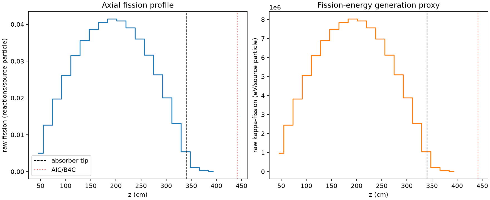
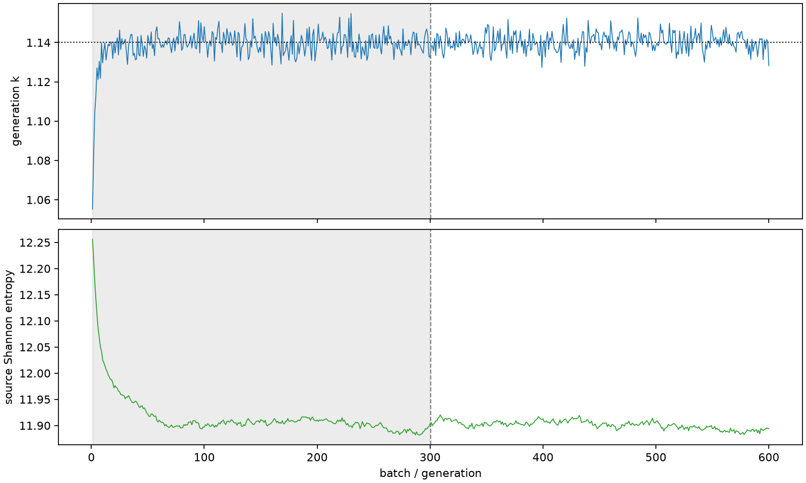

| field | value |
|---|---|
| experiment | V2-STAGE_128_OGRENCI_02-0005 |
| k | 1.140035622718916 |
| MC standard error | 0.00018514045049625126 |
| seconds | 1099.963754556 |
| acceptance | not_assessed |
| convergence | review_required |
Completed is output integrity only; physical and statistical review required. Zero tallies do not prove zero production or zero uncertainty.
| diagnostic | value |
|---|---|
| geometric fuel voxels | 5280 |
| zero fission tally voxels | 0 |
| low signal fuel voxels | 124 |
| low signal fission share | 5.499735804584722e-05 |
| low signal kappa share | 5.50170292253869e-05 |
| important fission share | 0.9500087061980033 |
| previous filter included | 5156 |
| duration estimate s | 1562.5173488400023 |
| actual minus estimate s | -462.55359428400243 |
| fission relative MC error | statistics |
|---|---|
| all_geometric_fuel | {"voxels": 5280, "positive_mean_voxels": 5280, "zero_mean_voxels": 0, "undefined_relative_error_voxels": 0, "median": 0.010250283203841446, "p95": 0.12646257779521858, "maximum": 0.36206583256026875} |
| low_signal | {"voxels": 124, "positive_mean_voxels": 124, "zero_mean_voxels": 0, "undefined_relative_error_voxels": 0, "median": 0.21572411275414122, "p95": 0.2672221426369134, "maximum": 0.36206583256026875} |
| important_95pct | {"voxels": 3718, "positive_mean_voxels": 3718, "zero_mean_voxels": 0, "undefined_relative_error_voxels": 0, "median": 0.009090354299017294, "p95": 0.013939675975621244, "maximum": 0.01687992921656562} |
| outside_previous_filter | {"voxels": 124, "positive_mean_voxels": 124, "zero_mean_voxels": 0, "undefined_relative_error_voxels": 0, "median": 0.21572411275414122, "p95": 0.2672221426369134, "maximum": 0.36206583256026875} |
| kappa_fission relative MC error | statistics |
|---|---|
| all_geometric_fuel | {"voxels": 5280, "positive_mean_voxels": 5280, "zero_mean_voxels": 0, "undefined_relative_error_voxels": 0, "median": 0.010239208206644888, "p95": 0.126251187721376, "maximum": 0.3615974231117055} |
| low_signal | {"voxels": 124, "positive_mean_voxels": 124, "zero_mean_voxels": 0, "undefined_relative_error_voxels": 0, "median": 0.2153929457656546, "p95": 0.26686859031501037, "maximum": 0.3615974231117055} |
| important_95pct | {"voxels": 3718, "positive_mean_voxels": 3718, "zero_mean_voxels": 0, "undefined_relative_error_voxels": 0, "median": 0.009078770377190917, "p95": 0.013924201418341432, "maximum": 0.016860914505411703} |
| outside_previous_filter | {"voxels": 124, "positive_mean_voxels": 124, "zero_mean_voxels": 0, "undefined_relative_error_voxels": 0, "median": 0.2153929457656546, "p95": 0.26686859031501037, "maximum": 0.3615974231117055} |
| axial bin | fission share | kappa-fission share |
|---|---|---|
| 1 | 0.010764170541375462 | 0.010764640859847845 |
| 2 | 0.027239769104084197 | 0.027239685743379278 |
| 3 | 0.042478389993672636 | 0.042478437516860194 |
| 4 | 0.05620371033083093 | 0.05620345160636496 |
| 5 | 0.06774796094399989 | 0.0677477413891321 |
| 6 | 0.07651243869971698 | 0.07651234756444436 |
| 7 | 0.08308356521464634 | 0.08308322225883782 |
| 8 | 0.08697749437964732 | 0.08697711404037013 |
| 9 | 0.08905340168932478 | 0.08905309206568195 |
| 10 | 0.08794215491806733 | 0.08794201181007015 |
| 11 | 0.08400911555020363 | 0.08400895206599385 |
| 12 | 0.0773958262251251 | 0.0773956238159303 |
| 13 | 0.06806845802542683 | 0.06806841883485729 |
| 14 | 0.05659919807562695 | 0.05659915747598151 |
| 15 | 0.04309816770415974 | 0.043097993530008386 |
| 16 | 0.02822248881132336 | 0.02822236993776237 |
| 17 | 0.011611075653862723 | 0.011612025947395426 |
| 18 | 0.0023246748789095403 | 0.0023255042352339408 |
| 19 | 0.0005498859252472519 | 0.0005501080980945478 |
| 20 | 0.00011805333474901992 | 0.00011810120375357719 |
Histories include the inactive-to-active transition at batch 300. kappa-fission approximates fission energy production, not total heat deposition.

